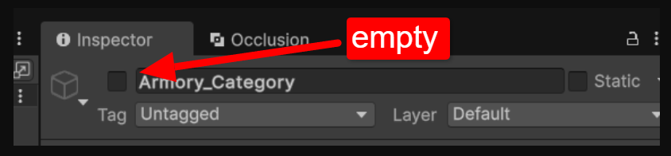
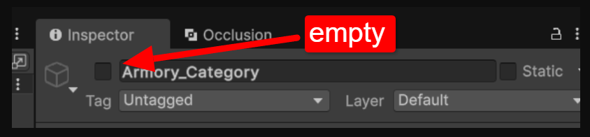

TEXTMESH PRO NEL PROGETTO
Il pacchetto TextMesh Pro è incluso in Unity Editor. Non è necessario installarlo. Puoi seguire la semplice guida al link per inserirlo nel progetto (TextMesh Pro).
Potrebbe verificarsi un problema per cui non vedrai le scritte nei pulsanti o in altre parti, dovuto al fatto che il testo non ha un font assegnato. Basta andare nel testo e impostare un font base o personalizzato.


 
